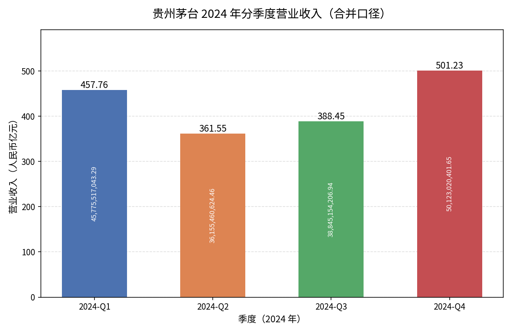

运行链路已接通，财务语义验收未通过
打开工作台 · Benchmark 设计 · 竞赛定位与后续升级
Pi 会话、LangExtract、数据库、看板和真实 Docker 绘图已连接。新来源仍暴露出漏表、表头误判和并发审计引用缺陷；完整年报的部分财务口径仍混用。本页保留失败，不用开发集成绩代替未见公司验证。
10份输入，另2个禁止错误检查通过。已反复用于调试。
神华、柳工，7页；程序、输入、答案和评分器运行时固定。
仅纠正“% / percent”显示单位误拒；没有重跑模型。
留出集失败究竟是什么
| 数量 | 独立核对结论 | 含义 |
|---|---|---|
| 1格 | 百分比显示单位评分合同错误。 | 原记录17/30不覆盖；只读复评18/30单列。 |
| 5格 | 实际金额、指标、单位、期间及原PDF坐标正确，但行名断行后，评分器按完整行名定位误拒。 | 另有源格诊断证据；不偷偷合并成新的正式通过率。 |
| 5格 | 神华原PDF第143页无框线利润表未被解析成表格，目标数值未进入模型清洗。 | 真实漏抽；需要让未识别表格的原生文本页也能进入模型理解流程。 |
| 2格 | 柳工总资产源格已存在，但程序将上方每股收益、ROE数据误作表头，错误触发单位冲突。 | 真实漏抽；表头范围与字段语义应结合模型判断，当前机械阻断过强。 |
另有两个流程检查失败：目录检查没有兼容已经过定义审校的合法来源字段；期间审计则确有并发缓存覆盖问题——报告引用旧调用，缓存被另一会话的结果替换。后者不能按“都是模型输出”判通过。
首次原报告 · 单位合同复评 · 重复点击不重跑的证据
首次结果的分层诊断 · 5格原PDF坐标核对 · 并发缓存引用缺口
这次优化做了什么，还缺什么
| 部分 | 已做与证据 | 当前缺口 |
|---|---|---|
| 运行架构 | 独立持久Pi会话，同项目共享数据；清洗经所属运行的统一模型接口；查询、计算与绘图同一工具循环。 | 共享模型缓存需要不可变结果引用或原子写入，保证并发审计一致。 |
| 大数据传输 | 修复超过MCP消息上限造成的断开；分页完整读取3298条事实，此前3294条CSV完整导出已验证。 | 大规模跨公司查询仍需数据库聚合和按需取证。 |
| 恢复与回答 | 已完成批次验证后复用；修复“已完成”早于最终回答保存的竞态。 | 重复失败的任务需要分型处理和调整粒度，避免同输入整轮重试。 |
| 财务语义 | LangExtract处理字段、期间、单位、范围及重述；新增依据原文定义的复核模块。 | 完整年报复核每次附带全目录，出现截断和超时，定义更改0条；模块存在不等于能力验收完成。 |
| 模型请求传输 | 审计保留实际请求和结果，能够发现桥接层的输入损坏。 | 当前桥接逐个网络字节块解码UTF-8，中文跨块时可能出现替代字符；这是传输缺陷，未在冻结版本中修复。 |
本次7页留出输入耗时384.048秒，共39次模型调用，记录输入2,248,140、输出268,504 tokens。调用量包含对话与多阶段复核，不是原文长度。未配置模型价格，没有推算费用。应先减少无关目录、重复工具返回和重复复核，再增加有界并发。
完整年报的结果单列
茅台2024：143页，275张原表，242张候选财务表，266批，3298条已存事实。原3294条金额、原值和单位保持；新增4条长指标名事实均有原表依据。日期实际修改133条，仍有11条未决。
最后一次定义复核发生两次输出截断、三次120秒中断，随后Pi重复整轮任务。开发代理主动停止重复消耗；取消接口的通用文字“用户取消”不表示用户发出了停止指令。原事实和既有日期修订没有改动。15个已知定义标准仅2个符合，9组应区分关系均未通过。
完整年报失败报告 · 停止原因与数据守恒 · 已知财务口径检查
目录冗余、重试与中文传输缺陷证据。120秒中断是审计观测，具体触发来源尚未证明，不等同于分析容器的运行时限。
查询与绘图已实际验证
在上述完整年报的原会话继续提问，Pi查询SQLite，并调用独立Docker生成图和精确十进制JSON。6项检查通过，四季度数据与数据库一致；第三季度另与开发标准源格核对。这个结果只证明该查询与绘图任务成功。

如何自己检测
- 工作台左侧“数据集与测试”下载原始年报或测试包；也可使用下方本地链接。
- 新建项目和会话，添加PDF附件并发送“处理这些财报，入库并登记看板”。上传本身不自动清洗。
- 在看板按公司、期间、财务类别查看数据，点击来源对照原PDF；同项目新会话可继续查询和制图。
- “独立留出验收”返回本次锁定结果，重复点击不新增调用。开发回归可另行运行，会产生API调用。
4份无需OCR原始年报 · 开发集输入与标准答案 · 独立公司输入、来源与标准答案
159项服务测试和22项Node测试通过不代表财务语义正确。公开材料可能进入模型预训练；30个目的性选取源格不是随机总体估计，也不是全部额外抽取事实的精确率。若根据此次结果继续修改系统，本留出集将成为开发回归，下一轮泛化评估必须另选未使用公司。